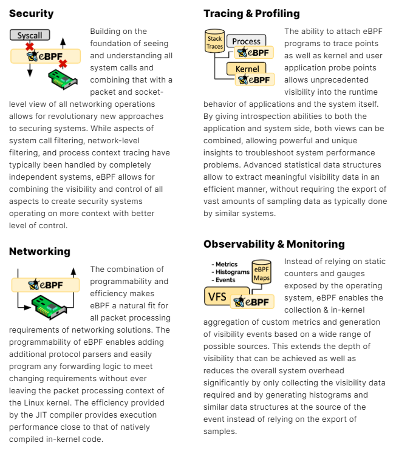

专题 安全开源工具 标签 eBPF检测、eBPF防御、eBPF安全 首发于创新研究院官方博客
摘要
eBPF的出现使得Linux内核级别的网络过滤和事件介入不再是难题。如云原生场景下集群东西向流量的转发这一难题将得到轻快而优雅的解决，同样，今天笔者为大家带来的开源组件Tetragon便是基于eBPF技术的一种运行时安全执行和可观察性工具，本文期望通过对开源工具Tetragon的分享，为eBPF技术在云原生场景下的安全检测和防御提供一些思路。
-
简介
- 什么是eBPF？
eBPF（extended Berkeley Packet Filters）起源于BPF， 是一套通用执行引擎，提供了直通Linux内核的可编程通用能力。自Linux内核3.18版本后BPF扩展了 Berkeley 数据包过滤器等一系列特性，此后版本被称为eBPF，而之前的版本则被区分为cBPF。如图1 所示，由于新特性的加持，eBPF的架构设计得到更新，eBPF也注定在更多场景中发挥更大的价值，同时也由于eBPF比cBPF执行得更快等原因，cBPF在新的内核中也基本被废弃[[1]]。
图1 eBPF架构图
- eBPF有哪些应用场景？
由于eBPF具备从用户态到内核级史无前例的深度覆盖能力，不难想象，其应用领域也将是颠覆性的。关于这方面，官方也大致给出了如图2所示的4类应用场景[[2]]：

图2 eBPF应用场景
- 安全防护
如利用系统调用过滤并且结合网络过滤阻断恶意的调用动作或者丢弃恶意和非预期的流量，这个正好是检测或防护类产品的本质操作，这些操作直接作用于原对象，无需多余备份，其处理效率是传统手段很难达到的。正因为如此，绿盟科技创新研究院孵化的创新方案（云原生API网关）在做网络优化技术实施时也包含这一技术。
- 调用追踪
通过创建内核探测或用户探测可以在内核或用户应用程序的几乎任何位置附加 eBPF 程序，结合整体的信息，用户程序到内核级别的上下文追踪将不是那么困难。
当然，笔者认为要想做到一个通用的追踪模型还有一段路程去走，例如Containiq的联合创始人兼首席技术官Matt Lenhard在一篇分布式追踪的文章里也描述到他们基于元数据关联进行追踪时，尽管在整个Kubernetes 集群中的调用追踪关联性很好，但lambda 函数调用相关性追踪在不改动请求头的情况下很难关联等问题[[3]]。
- 网络编排
优化网络过滤器的内部 BPF 指令集处理是eBPF的最初设计目标，由此可见eBPF在网络技术中的亮眼地位。Hook在网络驱动特定位置，优化最佳路径，加上先天无需包复制即可进行数据包过滤，这对网络编排具有得天独厚的优势。此领域不得不提的是Isovalent公司一手打造出的开源项目-Cilium ，将 eBPF技术融入 Kubernetes，成为云原生的革命性技术。
- 数据监控
正如官方介绍，基于eBPF的数据监控，不依赖于系统应用的数据，其直指内核，这意味着更加透明和实时的数据审计。
- 为什么要聊Tetragon ？
第一，Tetragon是一款基于 eBPF技术的运行时安全实施和可观察性开源工具。多年来一直是 Isovalent Cilium Enterprise的一部分，2022年5月 Tetragon决定将其开源。了解到以上开源背景，相信不少朋友也会和笔者一样对其多关注一点。
第二，Tetragon 仅做到了可视化和动作执行，留下更多深思的空间。这相当于是“削了皮的土豆”， 从土豆种植到土豆收获以及清洗削皮有完整的指导，对于接下来是炒土豆丝还是土豆片，亦或是雕花等等完全交给大家去发掘。
- Tetragon部署
理论上Tetragon 可以部署到任何内核支持BTF的系统内，这里包括虚拟机、容器或K8s集群等方式部署。如图3所示，在K8s环境中，Tetragon以DaemonSet的方式部署在集群中的每个节点上。通过配置文件看到Tetragon目前是以特权容器方式运行，笔者以为特权运行会增加整个环境的不安全风险，是否有其他更小权限的方案（如SYS_BPF_ADMIN等）值得去实践和思考。除特殊说明外，本文稍后涉及部署位置的讨论均默认在K8s集群内进行。
图3 K8s环境中Tetragon部署方式
- Tetragon功能特性
相对于传统技术，Tetragon基于eBPF提供了如文件、套接字、二进制名称、命名空间/函数等丰富的过滤器，直接在内核中应用过滤器，不必花销繁重的上下文切换和唤醒等资源。值得关注的是开源工具本身并没有内置跟踪哪些函数和应用哪些过滤器，在目录中仅提供了部分的场景示例，这为后期的功能扩展和自定义跟踪提供了较大的灵活性。除此之外Tetragon的两个主打功能（可视化和实时执行）也是值得继续发掘和延伸的。
4.1 可视化
基于eBPF技术Tetragon 很容易对内核子系统进行观测，包括文件系统访问、网络数据访问，以及系统调用层的事件。 如图4所示[[4]]， Tetragon可以做到对集群感知，也就是说针对集群内的活动上下文事件将体现集群特性，例如命名空间和 pod。 看到此处，笔者不禁联想到此技术在集群安全取证产品上也会有无限的发挥空间。
图4 K8s环境中Tetragon 的监控数据
对于可视化来说，如图5所示，Tetragon 中通过网络过滤和运行时过滤的联合，对于特定的单体对象（如文件、函数等）很容易展示出其上下文的关联。Isovalent官方博客中描述其是“智能的”，不可否认，对于单个数据链可视化的深度来说，上下文的信息是比较丰富的，但离智能似乎还有一段路要走。笔者认为，如何将整个系统中无数的调用链进行关联，以形成“血管网络图谱”、如何对调用链路的分类乃至异常特征的自动标注，以达到异常调用链路联想的效果，这是走向“智能”的一条道路。
图5 某横向移动可视化
Tetragon借助eBPF技术可以做到对网络、运行时、敏感文件以及云原生生态链组件信息等进行检测，这充分体现了eBPF的强大之处，但正因为如此，应用eBPF技术到攻击面将是更加可怕的，正如美团信息安全团队所表达的忧虑[[5]]，Tetragon也是使用eBPF的相关接口，如果环境已经有恶意程序对eBPF的结果进行伪装，那么以上所有的可视化上下文将无法发现问题。借用其罗列的取证思路，提前结合系统层和用户态的信息进行比对将是一种最直接的解决方法。这里笔者还想到的是：在eBPF用户空间程序层利用第三方可信组件（注意这里不使eBPF本身变复杂）提供签名验证（如结合类似Sigstore + In-toto保证供应链组件的调用来源可信+调用内容可信），以此保证加载程序的合法性来避免此类的攻击是否是一种较好的解决思路呢？
- 实时执行
如图6所示[[6]]，Tetragon支持来自多层级的安全策略机制，如通过用户层、CRD和JSON API 等第三方应用层或 OPA等系统层注入安全策略，当然也可以在内核层预制规则。当策略被触发时，实时对下一步操作做出响应，如拦截等。而这些响应动作直接在内核中对事件做出反应，而不是将事件发送到用户空间代理，这极大地缩短了上下游的响应链。
图6 Tetragon策略架构
Tetragon提供基于多层的策略抽象代理，面向用户态的操作者可以轻松地定义规则配置，达到从上至下的实时管控效果。需要注意的是，这也面临同样的问题，如果环境已经被恶意利用eBPF技术攻击， 那Tetragon的实时执行结果将可能是被篡改的。
- 总结
由于笔者本身对eBPF攻击和防御技术的认识有限，本文仅依托开源组件Tetragon对eBPF技术做一些浅简的思考，如有不妥之处，观点仅代表笔者本人，同时也欢迎有兴趣的同学后台联系我们一起交流学习，更多深层次的eBPF技术剖析后期将会由此方向的研究同学进行分享。
参考资料
[1] [] 狄卫华.深入浅出eBPF
[2] [] eBPF.What is eBPF
[3] [] Matt Lenhard.Automated Distributed Tracing Using eBPF (Part 1)
[4] [] https://github.com/cilium/tetragon
[5] [] 美团信息安全团队.Linux中基于eBPF的恶意利用与检测机制
[6] [] Isovalent.Tetragon – eBPF-based Security Observability & Runtime Enforcement